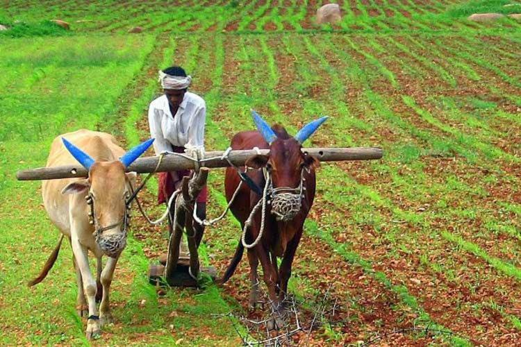

AGRICULTURE DEETS
Farmers:

Indian farmers are people who grow crops.
Various government estimates (Census, Agricultural Census, National Sample Survey assessments, and Periodic Labour Force Surveys) give a different number of farmers in the country ranging from 37 million to 118 million as per the different definitions.
Some definitions take in to account the number of holdings as compared to the number of farmers.
Other definitions take into account possession of land, while others try to delink land ownership from the definition of a farmer.
Other terms also used include 'cultivator'.
India's National Policy for Farmers 2007 defines farmer as
The term will also include tribal families / persons engaged in shifting cultivation and in the collection, use and sale of timber and non-timber forest produce.